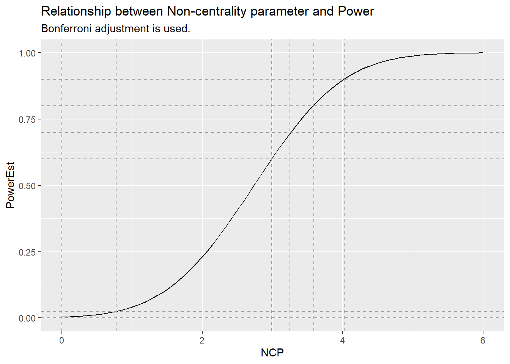

Show the code
require(tidyverse)
library(readr)
require(broom)
require(parallel)
require(gridExtra)
require(gMCP)
require(gt)Objective: Conduct a simulation to explore the operating characteristics of a series of user-defined graphs, \(G_1, ..., G_k\) using a simulated raw p-values.
Assumptions:
Taking a bootstrap based approach to p-value generation
Simulate subject level data
Simulate test statistics
Simulate by appeal to the gMCP functionality
Simulate p-values directly
Make sure you have JAVA installed if you plan to use the gMCP::graphGUI interface.
require(tidyverse)
library(readr)
require(broom)
require(parallel)
require(gridExtra)
require(gMCP)
require(gt)This function initiates parallel computing using the parallel package.
goparallel <- function(ncores = 7)
{
cat(paste("\nCurrent Connections: ", dim(showConnections())[1], "\n"))
cat("\nClosing any open connections...\n")
#closeAllConnections()
if (exists("cl"))
remove(cl)
cat(paste("\nCurrent Connections: ", dim(showConnections())[1], "\n"))
cat(paste("\nStarting new cluster with", ncores, "cores...\n"))
cl <<- parallel::makeCluster(spec = ncores, type = "PSOCK")
cat(" Cluster initiation complete\n")
cat(paste("\nCurrent Connections: ", dim(showConnections())[1], "\n"))
cat(paste("\n", exists("cl"), "\n"))
parallel::clusterEvalQ(cl = cl, expr = {
require(tidyverse)
})
cat(
"\n\n***\nThe tidyverse pacakge has been sent to each core.\nDo you need other
parallel::clusterEvalQ or parallel::clusterExport calls before running your code?\n****\n"
)
}Imagine that we wish to replicate this historic trial, perhaps at a different sample size. One approach to consider is taking bootstrap samples from this historic trial, running tests and collecting the raw p-values. (We will use these p-values with the graphical testing procedures we will define later.)
In this section we’ll
Without loss of generality, one can appeal to the file ‘bootstrapped pvalues.csv’, which is what will be used to evaluate graphs we define elsewhere.
Here’s a fictitious historic trial.
eyecare_data <- read_csv("data/eyecare-data.csv")All responses of interest appear in the response column.
# View(eyecare_data)
head(eyecare_data) %>% gt()| SUBJID | CATEGORY | PARAM | OEMETHOD | hour | day | ARMCD | endpoint | response | Hypothesis | Hyp.No |
|---|---|---|---|---|---|---|---|---|---|---|
| 301005001 | MESOPIC VISUAL ACUITY DCN | MH Visual Acuity Score DCN OU | Distance Corrected Near | 3 hr | Day 14 | Treatment | DCNVA 3-Line Improvement and without CDVA >=-5 Letter Loss | 0 | MESOPIC VISUAL ACUITY DCN Day 14 3 hr DCNVA 3-Line Improvement and without CDVA >=-5 Letter Loss | 2 |
| 301005003 | MESOPIC VISUAL ACUITY DCN | MH Visual Acuity Score DCN OU | Distance Corrected Near | 3 hr | Day 14 | Treatment | DCNVA 3-Line Improvement and without CDVA >=-5 Letter Loss | 1 | MESOPIC VISUAL ACUITY DCN Day 14 3 hr DCNVA 3-Line Improvement and without CDVA >=-5 Letter Loss | 2 |
| 301005004 | MESOPIC VISUAL ACUITY DCN | MH Visual Acuity Score DCN OU | Distance Corrected Near | 3 hr | Day 14 | Treatment | DCNVA 3-Line Improvement and without CDVA >=-5 Letter Loss | 0 | MESOPIC VISUAL ACUITY DCN Day 14 3 hr DCNVA 3-Line Improvement and without CDVA >=-5 Letter Loss | 2 |
| 301005005 | MESOPIC VISUAL ACUITY DCN | MH Visual Acuity Score DCN OU | Distance Corrected Near | 3 hr | Day 14 | Treatment | DCNVA 3-Line Improvement and without CDVA >=-5 Letter Loss | 0 | MESOPIC VISUAL ACUITY DCN Day 14 3 hr DCNVA 3-Line Improvement and without CDVA >=-5 Letter Loss | 2 |
| 301005007 | MESOPIC VISUAL ACUITY DCN | MH Visual Acuity Score DCN OU | Distance Corrected Near | 3 hr | Day 14 | Treatment | DCNVA 3-Line Improvement and without CDVA >=-5 Letter Loss | 1 | MESOPIC VISUAL ACUITY DCN Day 14 3 hr DCNVA 3-Line Improvement and without CDVA >=-5 Letter Loss | 2 |
| 301005008 | MESOPIC VISUAL ACUITY DCN | MH Visual Acuity Score DCN OU | Distance Corrected Near | 3 hr | Day 14 | Treatment | DCNVA 3-Line Improvement and without CDVA >=-5 Letter Loss | 0 | MESOPIC VISUAL ACUITY DCN Day 14 3 hr DCNVA 3-Line Improvement and without CDVA >=-5 Letter Loss | 2 |
We can also filter by Hyp.No to focus on a hypothesis of interest.
eyecare_data %>%
filter(SUBJID == unique(SUBJID)[1]) %>%
arrange(Hyp.No) %>%
select(Hyp.No, everything(),-SUBJID) %>%
gt()| Hyp.No | CATEGORY | PARAM | OEMETHOD | hour | day | ARMCD | endpoint | response | Hypothesis |
|---|---|---|---|---|---|---|---|---|---|
| 1 | MESOPIC VISUAL ACUITY DCN | MH Visual Acuity Score DCN OU | Distance Corrected Near | 1 hr | Day 14 | Treatment | VA 20/40 or better | 1 | MESOPIC VISUAL ACUITY DCN Day 14 1 hr VA 20/40 or better |
| 2 | MESOPIC VISUAL ACUITY DCN | MH Visual Acuity Score DCN OU | Distance Corrected Near | 3 hr | Day 14 | Treatment | DCNVA 3-Line Improvement and without CDVA >=-5 Letter Loss | 0 | MESOPIC VISUAL ACUITY DCN Day 14 3 hr DCNVA 3-Line Improvement and without CDVA >=-5 Letter Loss |
| 3 | PHOTOPIC VISUAL ACUITY DCI | PH Visual Acuity Score DCI OU | Distance Corrected Intermediate | 3 hr | Day 14 | Treatment | CHANGE | 0 | PHOTOPIC VISUAL ACUITY DCI Day 14 3 hr CHANGE |
| 4 | PHOTOPIC VISUAL ACUITY DCN | PH Visual Acuity Score DCN OU | Distance Corrected Near | 0.25 hr | Day 1 | Treatment | VA 2-lines or more | 1 | PHOTOPIC VISUAL ACUITY DCN Day 1 0.25 hr VA 2-lines or more |
| 5 | PHOTOPIC VISUAL ACUITY DCN | PH Visual Acuity Score DCN OU | Distance Corrected Near | 0.5 hr | Day 1 | Treatment | VA 3-lines or more | 1 | PHOTOPIC VISUAL ACUITY DCN Day 1 0.5 hr VA 3-lines or more |
| 6 | PHOTOPIC VISUAL ACUITY DCN | PH Visual Acuity Score DCN OU | Distance Corrected Near | 1 hr | Day 14 | Treatment | DCNVA 3-Line Improvement and without CDVA >=-5 Letter Loss | 1 | PHOTOPIC VISUAL ACUITY DCN Day 14 1 hr DCNVA 3-Line Improvement and without CDVA >=-5 Letter Loss |
| 7 | PHOTOPIC VISUAL ACUITY DCN | PH Visual Acuity Score DCN OU | Distance Corrected Near | 3 hr | Day 14 | Treatment | DCNVA 3-Line Improvement and without CDVA >=-5 Letter Loss | 1 | PHOTOPIC VISUAL ACUITY DCN Day 14 3 hr DCNVA 3-Line Improvement and without CDVA >=-5 Letter Loss |
| 8 | PHOTOPIC VISUAL ACUITY DCN | PH Visual Acuity Score DCN OU | Distance Corrected Near | 6 hr | Day 14 | Treatment | VA 2-lines or more | 1 | PHOTOPIC VISUAL ACUITY DCN Day 14 6 hr VA 2-lines or more |
We’ll use these graphs throughout our exercises.
Let’s define a series of candidate graphs to explore via simulation.
gMCP::graphGUI needs to be run from the windows terminal.
Steps include:


This is the standard Bonferroni adjustment expressed as a graph.
m <- rbind(
H1 = c(0, 0, 0, 0, 0, 0, 0, 0),
H2 = c(0, 0, 0, 0, 0, 0, 0, 0),
H3 = c(0, 0, 0, 0, 0, 0, 0, 0),
H4 = c(0, 0, 0, 0, 0, 0, 0, 0),
H5 = c(0, 0, 0, 0, 0, 0, 0, 0),
H6 = c(0, 0, 0, 0, 0, 0, 0, 0),
H7 = c(0, 0, 0, 0, 0, 0, 0, 0),
H8 = c(0, 0, 0, 0, 0, 0, 0, 0)
)
weights <- c(0.125, 0.125, 0.125, 0.125, 0.125, 0.125, 0.125, 0.125)
graph.Bonferroni <- new("graphMCP", m = m, weights = weights)
This is the standard Fixed Sequence adjustment expressed as a graph.
m <- rbind(
H1 = c(0, 1, 0, 0, 0, 0, 0, 0),
H2 = c(0, 0, 1, 0, 0, 0, 0, 0),
H3 = c(0, 0, 0, 1, 0, 0, 0, 0),
H4 = c(0, 0, 0, 0, 1, 0, 0, 0),
H5 = c(0, 0, 0, 0, 0, 1, 0, 0),
H6 = c(0, 0, 0, 0, 0, 0, 1, 0),
H7 = c(0, 0, 0, 0, 0, 0, 0, 1),
H8 = c(0, 0, 0, 0, 0, 0, 0, 0)
)
weights <- c(1, 0, 0, 0, 0, 0, 0, 0)
graph.fixedSequence <- new("graphMCP", m = m, weights = weights)
This is the Bonferroni-Holm graph courtesy of the gMCP GUI.
m <- rbind(
H1=c(0, 1/7, 1/7, 1/7, 1/7, 1/7, 1/7, 1/7 ),
H2=c(1/7, 0, 1/7, 1/7, 1/7, 1/7, 1/7, 1/7 ),
H3=c(1/7, 1/7, 0, 1/7, 1/7, 1/7, 1/7, 1/7 ),
H4=c(1/7, 1/7, 1/7, 0, 1/7, 1/7, 1/7, 1/7 ),
H5=c(1/7, 1/7, 1/7, 1/7, 0, 1/7, 1/7, 1/7),
H6=c(1/7, 1/7, 1/7, 1/7, 1/7, 0, 1/7, 1/7),
H7=c(1/7, 1/7, 1/7, 1/7, 1/7, 1/7, 0, 1/7),
H8=c(1/7, 1/7, 1/7, 1/7, 1/7, 1/7, 1/7, 0))
weights <- c(0.125, 0.125, 0.125, 0.125, 0.125,
.125, 0.125, 0.125)
graph.BonHolm <- new("graphMCP", m=m, weights=weights)
This is the Fallback procedure graph courtesy of the gMCP GUI. An improved Fallback would incorporate recycling.
m <- rbind(
H1 = c(0, 1, 0, 0, 0, 0, 0, 0),
H2 = c(0, 0, 1, 0, 0, 0, 0, 0),
H3 = c(0, 0, 0, 1, 0, 0, 0, 0),
H4 = c(0, 0, 0, 0, 1, 0, 0, 0),
H5 = c(0, 0, 0, 0, 0, 1, 0, 0),
H6 = c(0, 0, 0, 0, 0, 0, 1, 0),
H7 = c(0, 0, 0, 0, 0, 0, 0, 1),
H8 = c(0, 0, 0, 0, 0, 0, 0, 0)
)
weights <- c(0.25, 0.25, 0.25, 0.25, 0, 0, 0, 0)
graph.Fallback <- new("graphMCP", m = m, weights = weights)
|
# Your turn# Replace commented lines with the graph you create from the gMCP GUI
m <- rbind(
H1 = c(0, 0, 0, 0, 0, 0, 0, 0),
H2 = c(0.5, 0, 0, 0, 0, 0, 0.5, 0),
H3 = c(0, 0, 0, 0.25, 0.25, 0.25, 0, 0.25),
H4 = c(0, 0, 0, 0, 0, 0, 0, 0),
H5 = c(0, 0, 0, 0, 0, 0, 0, 0),
H6 = c(0, 0, 0.25, 0.25, 0.25, 0, 0, 0.25),
H7 = c(0, 1 / 3, 1 / 3, 0, 0, 1 / 3, 0, 0),
H8 = c(0, 0, 0, 0, 0, 0, 0, 0)
)
weights <- c(0, 0.5, 0, 0, 0, 0, 0.5, 0)
graph.coPrimary.1 <- new("graphMCP", m = m, weights = weights)
# Replace commented lines with the graph you create from the gMCP GUI
m <- rbind(
H1 = c(0, 0, 0, 0, 0, 0, 1, 0),
H2 = c(0.5, 0, 0, 0, 0, 0, 0.5, 0),
H3 = c(0, 0, 0, 0.25, 0.25, 0.25, 0, 0.25),
H4 = c(0, 1 / 3, 0, 0, 1 / 3, 0, 0, 1 / 3),
H5 = c(0, 1 / 3, 0, 1 / 3, 0, 0, 0, 1 / 3),
H6 = c(0, 0, 0.25, 0.25, 0.25, 0, 0, 0.25),
H7 = c(0, 1 / 3, 1 / 3, 0, 0, 1 / 3, 0, 0),
H8 = c(0, 1 / 3, 0, 1 / 3, 1 / 3, 0, 0, 0)
)
weights <- c(0, 0.5, 0, 0, 0, 0, 0.5, 0)
graph.coPrimary.2 <- new("graphMCP", m = m, weights = weights)
# Replace commented lines with the graph you create from the gMCP GUI
m <- rbind(
H1 = c(0, 0.999, 0, 0.001, 0, 0, 0, 0),
H2 = c(0.999, 0, 0.001, 0, 0, 0, 0, 0),
H3 = c(0, 0, 0, 0, 0, 1, 0, 0),
H4 = c(0, 0, 0, 0, 1, 0, 0, 0),
H5 = c(0, 0, 0, 0, 0, 0, 0, 1),
H6 = c(0, 0, 0, 0, 0, 0, 1, 0),
H7 = c(0, 0, 0, 1, 0, 0, 0, 0),
H8 = c(0, 0, 1, 0, 0, 0, 0, 0)
)
weights <- c(0.5, 0.5, 0, 0, 0, 0, 0, 0)
graph.MesoPhoto.FS <- new("graphMCP", m = m, weights = weights)
# Replace commented lines with the graph you create from the gMCP GUI
m <- rbind(
H1=c(0, 0.99, 0, 0.01/3, 0.01/3, 0, 0, 0.01/3),
H2=c(0.99, 0, 0.01/3, 0, 0, 0.01/3, 0.01/3, 0),
H3=c(1/3, 0, 0, 0, 0, 1/3, 1/3, 0),
H4=c(0, 1/3, 0, 0, 1/3, 0, 0, 1/3 ),
H5=c(0, 1/3, 0, 1/3, 0, 0, 0, 1/3 ),
H6=c(1/3, 0, 1/3, 0, 0, 0, 1/3, 0),
H7=c(1/3, 0, 1/3, 0, 0, 1/3, 0, 0),
H8=c(0, 1/3, 0, 1/3, 1/3, 0, 0, 0))
weights <- c(0.5, 0.5, 0, 0, 0, 0, 0, 0)
graph.MesoPhoto.SA <- new("graphMCP", m=m, weights=weights)
This section offers code to bootstrap sample from the historic data. It concludes by creating a .csv file, “bootstrapped pvalues.csv”, which is loaded in the sequel.
Major steps in this function:
#' get.boot.based.test.stats
#'
#' @param source.data data set used for illustration
#' @param ssize sample size used for bootstrap sampling
get.boot.based.test.stats <-
function(source.data = eyecare_data,
ssize = 100) {
# Identify unique SUBJID values ----
unique.subjects <- unique(source.data$SUBJID)
# Create a bootstrap sample by sampling unique SUBJID with replacement----
my.boot.subj <-
sample(x = unique.subjects,
size = ssize,
replace = T)
# Build the bootstrap sample ----
my.boot <-
bind_rows(apply(X = matrix(1:length(my.boot.subj)), MARGIN = 1, function(x) {
source.data %>%
ungroup() %>%
filter(SUBJID == my.boot.subj[x]) %>%
arrange(Hyp.No) %>%
mutate(SUBJID.boot = x)
}))
# Filter to the Hypothesis of interest and grab summary statistics----
t1 <-
my.boot %>% dplyr::filter(Hyp.No == 1) %>% group_by(Hyp.No, ARMCD) %>%
summarize(n = n(), x = sum(response))
t2 <-
my.boot %>% dplyr::filter(Hyp.No == 2) %>% group_by(Hyp.No, ARMCD) %>%
summarize(n = n(), x = sum(response))
t4 <-
my.boot %>% dplyr::filter(Hyp.No == 4) %>% group_by(Hyp.No, ARMCD) %>%
summarize(n = n(), x = sum(response))
t5 <-
my.boot %>% dplyr::filter(Hyp.No == 5) %>% group_by(Hyp.No, ARMCD) %>%
summarize(n = n(), x = sum(response))
t6 <-
my.boot %>% dplyr::filter(Hyp.No == 6) %>% group_by(Hyp.No, ARMCD) %>%
summarize(n = n(), x = sum(response))
t7 <-
my.boot %>% dplyr::filter(Hyp.No == 7) %>% group_by(Hyp.No, ARMCD) %>%
summarize(n = n(), x = sum(response))
t8 <-
my.boot %>% dplyr::filter(Hyp.No == 8) %>% group_by(Hyp.No, ARMCD) %>%
summarize(n = n(), x = sum(response))
t3 <-
my.boot %>% dplyr::filter(Hyp.No == 3) %>% group_by(Hyp.No, ARMCD) %>%
summarize(
n = n(),
mean = mean(response, na.rm = T),
sd = sd(response, na.rm = T)
)
# Run the individual tests of hypotheses ----
# tidy up the 7 tests of proportion and 1 t-test----
t1.test <-
tidy(prop.test(
x = t1$x,
n = t1$n,
alternative = "less"
))
t2.test <-
tidy(prop.test(
x = t2$x,
n = t2$n,
alternative = "less"
))
t4.test <-
tidy(prop.test(
x = t4$x,
n = t4$n,
alternative = "less"
))
t5.test <-
tidy(prop.test(
x = t5$x,
n = t5$n,
alternative = "less"
))
t6.test <-
tidy(prop.test(
x = t6$x,
n = t6$n,
alternative = "less"
))
t7.test <-
tidy(prop.test(
x = t7$x,
n = t7$n,
alternative = "less"
))
t8.test <-
tidy(prop.test(
x = t8$x,
n = t8$n,
alternative = "less"
))
t3.test <-
tidy(
t.test(
x = my.boot %>% dplyr::filter(Hyp.No == 3) %>%
dplyr::filter(ARMCD == "Treatment") %>% .$response ,
y = my.boot %>% dplyr::filter(Hyp.No == 3) %>%
dplyr::filter(ARMCD == "Control") %>% .$response,
alternative = "greater"
)
)
# Prepare output to return to user -----
for.return <- bind_rows(
t1.test %>% select(statistic, p.value) %>%
mutate(Hyp.No = 1),
t2.test %>% select(statistic, p.value) %>% mutate(Hyp.No = 2),
t3.test %>% select(statistic, p.value) %>% mutate(Hyp.No = 3),
t4.test %>% select(statistic, p.value) %>% mutate(Hyp.No = 4),
t5.test %>% select(statistic, p.value) %>% mutate(Hyp.No = 5),
t6.test %>% select(statistic, p.value) %>% mutate(Hyp.No = 6),
t7.test %>% select(statistic, p.value) %>% mutate(Hyp.No = 7),
t8.test %>% select(statistic, p.value) %>% mutate(Hyp.No = 8)
)
for.return2 <- data.frame(t(for.return)) %>% slice(1:2)
names(for.return2) <- paste0("Hyp.No", 1:ncol(for.return2))
for.return2 <- for.return2 %>%
mutate(metric = rownames(.)) %>%
select(metric, everything())
# return to user----
return(for.return2)
}# 6 seconds
tictoc::tic()
get.boot.based.test.stats(ssize=100)
get.boot.based.test.stats(ssize=125)
get.boot.based.test.stats(ssize=150)
get.boot.based.test.stats(ssize=200)
tictoc::toc()Steps here include
#### Initiate parallel computing on laptop
goparallel(ncores = 7)
Current Connections: 1
Closing any open connections...
Current Connections: 1
Starting new cluster with 7 cores...
Cluster initiation complete
Current Connections: 8
TRUE
***
The tidyverse pacakge has been sent to each core.
Do you need other
parallel::clusterEvalQ or parallel::clusterExport calls before running your code?
****# Load required packages on each core
parallel::clusterEvalQ(cl = cl, expr = {
require(broom)
})[[1]]
[1] TRUE
[[2]]
[1] TRUE
[[3]]
[1] TRUE
[[4]]
[1] TRUE
[[5]]
[1] TRUE
[[6]]
[1] TRUE
[[7]]
[1] TRUE# Load R objects to each core
parallel::clusterExport(cl = cl,
varlist = c("get.boot.based.test.stats", "eyecare_data"))For the following sample sizes we will run bootstrap samples
simsize <- 1000
# n = 100 ----
tictoc::tic() # About 45 minutes to run each
p.values.100 <-
bind_rows(parallel::parApply(
cl = cl,
X = matrix(1:simsize),
MARGIN = 1,
FUN = function(x) {
set.seed(x)
get.boot.based.test.stats(ssize =
100) %>%
mutate(seed = x, case = "n = 100")
}
))
tictoc::toc()
# n = 125 ----
p.values.125 <- bind_rows(parallel::parApply(
cl = cl,
X = matrix(1:simsize),
MARGIN = 1,
FUN = function(x) {
set.seed(x) get.boot.based.test.stats(ssize = 125) %>% mutate(seed = x, case = "n = 125")
}
))
# n = 150 ----
p.values.150 <-
bind_rows(parallel::parApply(
cl = cl,
X = matrix(1:simsize),
MARGIN = 1,
FUN = function(x) {
set.seed(x) get.boot.based.test.stats(ssize = 150) %>% mutate(seed = x, case = "n = 150")
}
))
# n = 175 ----
p.values.175 <-
bind_rows(parallel::parApply(
cl = cl,
X = matrix(1:simsize),
MARGIN = 1,
FUN = function(x) {
set.seed(x) get.boot.based.test.stats(ssize = 175) %>% mutate(seed = x, case = "n = 175")
}
))This code collates and save results to .csv file.
# Collate and save bootstrap based p-values
all.pvalues <-
bind_rows(p.values.100, p.values.125, p.values.150, p.values.175)
rownames(all.pvalues) <- NULL
# This file is provided to you and will be loaded later in this file.
# View(all.pvalues)
write.csv(all.pvalues, "bootstrapped pvalues.csv")Let’s explore the output after we make a call to gMCP::gMCP. First we create some test p-values.
set.seed(1234)
test.pvalues <- runif(n = 8, min = 0,max = .075)Let’s test with the Fixed Sequence graph.
gMCP.results.fixedSequence <-
gMCP(graph.fixedSequence,
test.pvalues,
test = "Bonferroni",
alpha = 0.025)Let’s inspect the object:
# class(gMCP.results.fixedSequence)
# str(gMCP.results.fixedSequence)
gMCP.results.fixedSequence@pvalues # Same as test.pvalues H1 H2 H3 H4 H5 H6
0.0085277558 0.0466724554 0.0456956050 0.0467534581 0.0645686538 0.0480232954
H7 H8
0.0007121817 0.0174412880 gMCP.results.fixedSequence@adjPValues # adjused P-values H1 H2 H3 H4 H5 H6
0.008527756 0.046672455 0.046672455 0.046753458 0.064568654 0.064568654
H7 H8
0.064568654 0.064568654 gMCP.results.fixedSequence@rejected # <-- This is what we are after! H1 H2 H3 H4 H5 H6 H7 H8
TRUE FALSE FALSE FALSE FALSE FALSE FALSE FALSE In practice, we’ll repeat this for a number of candidate graphs:
gMCP.results.Bonferroni <-
gMCP(graph.Bonferroni,
test.pvalues,
test = "Bonferroni",
alpha = 0.025)
gMCP.results.fixedSequence <-
gMCP(graph.fixedSequence,
test.pvalues,
test = "Bonferroni",
alpha = 0.025)
gMCP.results.BonHolm <-
gMCP(graph.BonHolm,
test.pvalues,
test = "Bonferroni",
alpha = 0.025)
gMCP.results.Fallback <-
gMCP(graph.Fallback,
test.pvalues,
test = "Bonferroni",
alpha = 0.025)
gMCP.results.coPrimary.1 <-
gMCP(graph.coPrimary.1,
test.pvalues,
test = "Bonferroni",
alpha = 0.025)
gMCP.results.coPrimary.2 <-
gMCP(graph.coPrimary.2,
test.pvalues,
test = "Bonferroni",
alpha = 0.025)
gMCP.results.MesoPhoto.FS <-
gMCP(graph.MesoPhoto.FS,
test.pvalues,
test = "Bonferroni",
alpha = 0.025)
gMCP.results.MesoPhoto.SA <-
gMCP(graph.MesoPhoto.SA,
test.pvalues,
test = "Bonferroni",
alpha = 0.025)Here’s sample output (remember this is for a null case example!).
bind_rows(
data.frame(t(gMCP.results.fixedSequence@rejected)) %>% mutate(graph = "fixedSequence"),
data.frame(t(gMCP.results.BonHolm@rejected)) %>% mutate(graph = "BonHolm"),
data.frame(t(gMCP.results.Fallback@rejected)) %>% mutate(graph = "Fallback"),
data.frame(t(gMCP.results.coPrimary.1@rejected)) %>% mutate(graph = "coPrimary.1"),
data.frame(t(gMCP.results.coPrimary.2@rejected)) %>% mutate(graph = "coPrimary.2"),
data.frame(t(gMCP.results.MesoPhoto.FS@rejected)) %>% mutate(graph = "MesoPhoto.FS"),
data.frame(t(gMCP.results.MesoPhoto.SA@rejected)) %>% mutate(graph = "MesoPhoto.SA")
) %>% gt()| H1 | H2 | H3 | H4 | H5 | H6 | H7 | H8 | graph |
|---|---|---|---|---|---|---|---|---|
| TRUE | FALSE | FALSE | FALSE | FALSE | FALSE | FALSE | FALSE | fixedSequence |
| FALSE | FALSE | FALSE | FALSE | FALSE | FALSE | TRUE | FALSE | BonHolm |
| FALSE | FALSE | FALSE | FALSE | FALSE | FALSE | FALSE | FALSE | Fallback |
| FALSE | FALSE | FALSE | FALSE | FALSE | FALSE | TRUE | FALSE | coPrimary.1 |
| FALSE | FALSE | FALSE | FALSE | FALSE | FALSE | TRUE | FALSE | coPrimary.2 |
| TRUE | FALSE | FALSE | FALSE | FALSE | FALSE | FALSE | FALSE | MesoPhoto.FS |
| TRUE | FALSE | FALSE | FALSE | FALSE | FALSE | FALSE | FALSE | MesoPhoto.SA |
We return back to the p-values generated to explore sample size.
all.pvalues <- read.csv("data/bootstrapped pvalues.csv")[, -1]
head(all.pvalues) %>%
gt() %>% fmt_number(decimals = 3)| metric | Hyp.No1 | Hyp.No2 | Hyp.No3 | Hyp.No4 | Hyp.No5 | Hyp.No6 | Hyp.No7 | Hyp.No8 | seed | case |
|---|---|---|---|---|---|---|---|---|---|---|
| statistic | 2.709 | 1.345 | 1.956 | 4.070 | 4.433 | 1.096 | 1.614 | 2.023 | 1.000 | n = 100 |
| p.value | 0.050 | 0.123 | 0.027 | 0.022 | 0.018 | 0.148 | 0.102 | 0.077 | 1.000 | n = 100 |
| statistic | 5.101 | 7.400 | 2.272 | 8.725 | 5.172 | 0.311 | 2.621 | 0.003 | 2.000 | n = 100 |
| p.value | 0.012 | 0.003 | 0.013 | 0.002 | 0.011 | 0.289 | 0.053 | 0.523 | 2.000 | n = 100 |
| statistic | 15.839 | 4.444 | 4.303 | 2.413 | 8.625 | 5.785 | 1.872 | 2.500 | 3.000 | n = 100 |
| p.value | 0.000 | 0.018 | 0.000 | 0.060 | 0.002 | 0.008 | 0.086 | 0.057 | 3.000 | n = 100 |
Power increases with sample size - as expected. Note, we are viewing the raw p-values.
all.pvalues %>% filter(metric == "p.value") %>%
group_by(case) %>%
summarize(
raw.power.H1 = mean(Hyp.No1 < .025),
raw.power.H2 = mean(Hyp.No2 < .025),
raw.power.H3 = mean(Hyp.No3 < .025),
raw.power.H4 = mean(Hyp.No4 < .025),
raw.power.H5 = mean(Hyp.No5 < .025),
raw.power.H6 = mean(Hyp.No6 < .025),
raw.power.H7 = mean(Hyp.No7 < .025),
raw.power.H8 = mean(Hyp.No8 < .025)
) %>% gt()| case | raw.power.H1 | raw.power.H2 | raw.power.H3 | raw.power.H4 | raw.power.H5 | raw.power.H6 | raw.power.H7 | raw.power.H8 |
|---|---|---|---|---|---|---|---|---|
| n = 100 | 0.829 | 0.692 | 0.812 | 0.537 | 0.630 | 0.298 | 0.538 | 0.283 |
| n = 125 | 0.910 | 0.783 | 0.889 | 0.661 | 0.768 | 0.402 | 0.653 | 0.380 |
| n = 150 | 0.955 | 0.868 | 0.933 | 0.753 | 0.856 | 0.500 | 0.744 | 0.471 |
| n = 175 | 0.982 | 0.931 | 0.963 | 0.827 | 0.902 | 0.572 | 0.823 | 0.550 |
We prepare a data.frame holding the p-values and pass this along with the graph definitions into the cores we initialized earlier.
just.pvalues <-
(all.pvalues %>% filter(metric == "p.value")) %>% select(-metric)
goparallel(ncores = 7)
Current Connections: 1
Closing any open connections...
Current Connections: 1
Starting new cluster with 7 cores...
Cluster initiation complete
Current Connections: 8
TRUE
***
The tidyverse pacakge has been sent to each core.
Do you need other
parallel::clusterEvalQ or parallel::clusterExport calls before running your code?
****parallel::clusterEvalQ(cl = cl, expr = {
require(tidyverse)
require(gMCP)
})[[1]]
[1] TRUE
[[2]]
[1] TRUE
[[3]]
[1] TRUE
[[4]]
[1] TRUE
[[5]]
[1] TRUE
[[6]]
[1] TRUE
[[7]]
[1] TRUEparallel::clusterExport(
cl = cl,
varlist = c(
"just.pvalues",
"graph.Bonferroni",
"graph.fixedSequence",
"graph.BonHolm",
"graph.Fallback",
"graph.coPrimary.1",
"graph.coPrimary.2",
"graph.MesoPhoto.FS",
"graph.MesoPhoto.SA"
)
)We will skip this step and simply load results.
tictoc::tic() # 67.71 sec elapsed
my.results <- bind_rows(parApply(
cl = cl,
MARGIN = 1,
X = matrix(1:nrow(just.pvalues)),
FUN = function(x) {
# For each simulated trial, get the results of applying each candidate graph ----
gMCP.results.Bonferroni <-
gMCP(graph.Bonferroni,
as.vector(t(just.pvalues[x, 1:8])),
test = "Bonferroni",
alpha = 0.025)
gMCP.results.fixedSequence <-
gMCP(graph.fixedSequence,
as.vector(t(just.pvalues[x, 1:8])),
test = "Bonferroni",
alpha = 0.025)
gMCP.results.BonHolm <-
gMCP(graph.BonHolm,
as.vector(t(just.pvalues[x, 1:8])),
test = "Bonferroni",
alpha = 0.025)
gMCP.results.Fallback <-
gMCP(graph.Fallback,
as.vector(t(just.pvalues[x, 1:8])),
test = "Bonferroni",
alpha = 0.025)
gMCP.results.coPrimary.1 <-
gMCP(graph.coPrimary.1,
as.vector(t(just.pvalues[x, 1:8])),
test = "Bonferroni",
alpha = 0.025)
gMCP.results.coPrimary.2 <-
gMCP(graph.coPrimary.2,
as.vector(t(just.pvalues[x, 1:8])),
test = "Bonferroni",
alpha = 0.025)
gMCP.results.MesoPhoto.FS <-
gMCP(graph.MesoPhoto.FS,
as.vector(t(just.pvalues[x, 1:8])),
test = "Bonferroni",
alpha = 0.025)
gMCP.results.MesoPhoto.SA <-
gMCP(graph.MesoPhoto.SA,
as.vector(t(just.pvalues[x, 1:8])),
test = "Bonferroni",
alpha = 0.025)
# Return the outcome, taking on graph labels, seed and case identifiers ----
bind_rows(
data.frame(t(gMCP.results.Bonferroni@rejected)) %>% mutate(graph = "Bonferroni"),
data.frame(t(gMCP.results.fixedSequence@rejected)) %>% mutate(graph = "fixedSequence"),
data.frame(t(gMCP.results.BonHolm@rejected)) %>% mutate(graph = "BonHolm"),
data.frame(t(gMCP.results.Fallback@rejected)) %>% mutate(graph = "Fallback"),
data.frame(t(gMCP.results.coPrimary.1@rejected)) %>% mutate(graph = "coPrimary.1"),
data.frame(t(gMCP.results.coPrimary.2@rejected)) %>% mutate(graph = "coPrimary.2"),
data.frame(t(gMCP.results.MesoPhoto.FS@rejected)) %>% mutate(graph = "MesoPhoto.FS"),
data.frame(t(gMCP.results.MesoPhoto.SA@rejected)) %>% mutate(graph = "MesoPhoto.SA")
) %>% mutate(seed = just.pvalues$seed[x],
case = just.pvalues$case[x])
}
))
tictoc::toc()
write.csv(x = my.results, "output/simresults.csv")my.results <- read.csv("output/simresults.csv")[, -1]
head(my.results) %>% gt()| H1 | H2 | H3 | H4 | H5 | H6 | H7 | H8 | graph | seed | case |
|---|---|---|---|---|---|---|---|---|---|---|
| FALSE | FALSE | FALSE | FALSE | FALSE | FALSE | FALSE | FALSE | Bonferroni | 1 | n = 100 |
| FALSE | FALSE | FALSE | FALSE | FALSE | FALSE | FALSE | FALSE | fixedSequence | 1 | n = 100 |
| FALSE | FALSE | FALSE | FALSE | FALSE | FALSE | FALSE | FALSE | BonHolm | 1 | n = 100 |
| FALSE | FALSE | FALSE | FALSE | FALSE | FALSE | FALSE | FALSE | Fallback | 1 | n = 100 |
| FALSE | FALSE | FALSE | FALSE | FALSE | FALSE | FALSE | FALSE | coPrimary.1 | 1 | n = 100 |
| FALSE | FALSE | FALSE | FALSE | FALSE | FALSE | FALSE | FALSE | coPrimary.2 | 1 | n = 100 |
Let’s look summaries for n=100 and n=175
my.results %>%
group_by(graph, case) %>% summarize(
Any = mean(H1 + H2 + H3 + H4 + H5 + H6 + H7 + H8 > 0),
H1 = mean(H1),
H2 = mean(H2),
H3 = mean(H3),
H4 = mean(H4),
H5 = mean(H5),
H6 = mean(H6),
H7 = mean(H7),
H8 = mean(H8)
) %>%
filter(case %in% c("n = 100", "n = 175")) %>%
gt()| case | Any | H1 | H2 | H3 | H4 | H5 | H6 | H7 | H8 |
|---|---|---|---|---|---|---|---|---|---|
| BonHolm | |||||||||
| n = 100 | 0.895 | 0.595 | 0.408 | 0.611 | 0.283 | 0.339 | 0.124 | 0.276 | 0.146 |
| n = 175 | 0.997 | 0.926 | 0.823 | 0.896 | 0.677 | 0.777 | 0.432 | 0.665 | 0.426 |
| Bonferroni | |||||||||
| n = 100 | 0.895 | 0.546 | 0.361 | 0.568 | 0.219 | 0.243 | 0.080 | 0.210 | 0.093 |
| n = 175 | 0.997 | 0.878 | 0.732 | 0.844 | 0.533 | 0.689 | 0.275 | 0.553 | 0.270 |
| Fallback | |||||||||
| n = 100 | 0.928 | 0.644 | 0.537 | 0.716 | 0.446 | 0.321 | 0.084 | 0.062 | 0.030 |
| n = 175 | 0.997 | 0.920 | 0.868 | 0.938 | 0.808 | 0.760 | 0.421 | 0.349 | 0.227 |
| MesoPhoto.FS | |||||||||
| n = 100 | 0.864 | 0.781 | 0.659 | 0.460 | 0.272 | 0.200 | 0.120 | 0.072 | 0.074 |
| n = 175 | 0.995 | 0.979 | 0.929 | 0.869 | 0.705 | 0.646 | 0.449 | 0.346 | 0.356 |
| MesoPhoto.SA | |||||||||
| n = 100 | 0.864 | 0.781 | 0.659 | 0.403 | 0.200 | 0.245 | 0.101 | 0.225 | 0.122 |
| n = 175 | 0.995 | 0.979 | 0.929 | 0.841 | 0.638 | 0.720 | 0.429 | 0.636 | 0.417 |
| coPrimary.1 | |||||||||
| n = 100 | 0.692 | 0.442 | 0.598 | 0.350 | 0.071 | 0.097 | 0.080 | 0.462 | 0.065 |
| n = 175 | 0.937 | 0.838 | 0.884 | 0.715 | 0.392 | 0.520 | 0.323 | 0.768 | 0.230 |
| coPrimary.2 | |||||||||
| n = 100 | 0.692 | 0.447 | 0.601 | 0.384 | 0.124 | 0.157 | 0.113 | 0.484 | 0.100 |
| n = 175 | 0.937 | 0.848 | 0.890 | 0.762 | 0.535 | 0.624 | 0.416 | 0.800 | 0.379 |
| fixedSequence | |||||||||
| n = 100 | 0.829 | 0.829 | 0.585 | 0.500 | 0.297 | 0.244 | 0.079 | 0.060 | 0.030 |
| n = 175 | 0.982 | 0.982 | 0.914 | 0.886 | 0.740 | 0.704 | 0.415 | 0.354 | 0.236 |
my.results %>%
group_by(case, graph) %>%
summarize(
Any = mean(H1 + H2 + H3 + H4 + H5 + H6 + H7 + H8 > 0),
H1 = mean(H1),
H2 = mean(H2),
H3 = mean(H3),
H4 = mean(H4),
H5 = mean(H5),
H6 = mean(H6),
H7 = mean(H7),
H8 = mean(H8)
) %>%
filter(graph %in% c("Bonferroni", "BonHolm")) %>%
gt()| graph | Any | H1 | H2 | H3 | H4 | H5 | H6 | H7 | H8 |
|---|---|---|---|---|---|---|---|---|---|
| n = 100 | |||||||||
| BonHolm | 0.895 | 0.595 | 0.408 | 0.611 | 0.283 | 0.339 | 0.124 | 0.276 | 0.146 |
| Bonferroni | 0.895 | 0.546 | 0.361 | 0.568 | 0.219 | 0.243 | 0.080 | 0.210 | 0.093 |
| n = 125 | |||||||||
| BonHolm | 0.960 | 0.753 | 0.558 | 0.730 | 0.431 | 0.507 | 0.212 | 0.412 | 0.206 |
| Bonferroni | 0.960 | 0.696 | 0.487 | 0.686 | 0.338 | 0.416 | 0.130 | 0.326 | 0.136 |
| n = 150 | |||||||||
| BonHolm | 0.984 | 0.862 | 0.706 | 0.821 | 0.579 | 0.662 | 0.334 | 0.562 | 0.316 |
| Bonferroni | 0.984 | 0.815 | 0.618 | 0.775 | 0.441 | 0.564 | 0.191 | 0.436 | 0.193 |
| n = 175 | |||||||||
| BonHolm | 0.997 | 0.926 | 0.823 | 0.896 | 0.677 | 0.777 | 0.432 | 0.665 | 0.426 |
| Bonferroni | 0.997 | 0.878 | 0.732 | 0.844 | 0.533 | 0.689 | 0.275 | 0.553 | 0.270 |
my.results %>% group_by(case, graph) %>%
summarize(
Any = mean(H1 + H2 + H3 + H4 + H5 + H6 + H7 + H8 > 0),
H1 = mean(H1),
H2 = mean(H2),
H3 = mean(H3),
H4 = mean(H4),
H5 = mean(H5),
H6 = mean(H6),
H7 = mean(H7),
H8 = mean(H8)
) %>%
filter(graph %in% c("BonHolm", "Fallback")) %>%
gt()| graph | Any | H1 | H2 | H3 | H4 | H5 | H6 | H7 | H8 |
|---|---|---|---|---|---|---|---|---|---|
| n = 100 | |||||||||
| BonHolm | 0.895 | 0.595 | 0.408 | 0.611 | 0.283 | 0.339 | 0.124 | 0.276 | 0.146 |
| Fallback | 0.928 | 0.644 | 0.537 | 0.716 | 0.446 | 0.321 | 0.084 | 0.062 | 0.030 |
| n = 125 | |||||||||
| BonHolm | 0.960 | 0.753 | 0.558 | 0.730 | 0.431 | 0.507 | 0.212 | 0.412 | 0.206 |
| Fallback | 0.966 | 0.782 | 0.655 | 0.819 | 0.605 | 0.506 | 0.188 | 0.144 | 0.072 |
| n = 150 | |||||||||
| BonHolm | 0.984 | 0.862 | 0.706 | 0.821 | 0.579 | 0.662 | 0.334 | 0.562 | 0.316 |
| Fallback | 0.989 | 0.866 | 0.781 | 0.880 | 0.709 | 0.631 | 0.306 | 0.246 | 0.157 |
| n = 175 | |||||||||
| BonHolm | 0.997 | 0.926 | 0.823 | 0.896 | 0.677 | 0.777 | 0.432 | 0.665 | 0.426 |
| Fallback | 0.997 | 0.920 | 0.868 | 0.938 | 0.808 | 0.760 | 0.421 | 0.349 | 0.227 |
my.results %>% group_by(case, graph) %>%
summarize(
Any = mean(H1 + H2 + H3 + H4 + H5 + H6 + H7 + H8 > 0),
H1 = mean(H1),
H2 = mean(H2),
H3 = mean(H3),
H4 = mean(H4),
H5 = mean(H5),
H6 = mean(H6),
H7 = mean(H7),
H8 = mean(H8)
) %>%
filter(graph %in% c("coPrimary.1", "coPrimary.2")) %>%
gt()| graph | Any | H1 | H2 | H3 | H4 | H5 | H6 | H7 | H8 |
|---|---|---|---|---|---|---|---|---|---|
| n = 100 | |||||||||
| coPrimary.1 | 0.692 | 0.442 | 0.598 | 0.350 | 0.071 | 0.097 | 0.080 | 0.462 | 0.065 |
| coPrimary.2 | 0.692 | 0.447 | 0.601 | 0.384 | 0.124 | 0.157 | 0.113 | 0.484 | 0.100 |
| n = 125 | |||||||||
| coPrimary.1 | 0.797 | 0.592 | 0.712 | 0.498 | 0.184 | 0.232 | 0.147 | 0.583 | 0.106 |
| coPrimary.2 | 0.797 | 0.597 | 0.713 | 0.537 | 0.263 | 0.316 | 0.201 | 0.611 | 0.162 |
| n = 150 | |||||||||
| coPrimary.1 | 0.880 | 0.728 | 0.812 | 0.616 | 0.292 | 0.370 | 0.237 | 0.694 | 0.164 |
| coPrimary.2 | 0.880 | 0.735 | 0.815 | 0.653 | 0.396 | 0.470 | 0.314 | 0.716 | 0.268 |
| n = 175 | |||||||||
| coPrimary.1 | 0.937 | 0.838 | 0.884 | 0.715 | 0.392 | 0.520 | 0.323 | 0.768 | 0.230 |
| coPrimary.2 | 0.937 | 0.848 | 0.890 | 0.762 | 0.535 | 0.624 | 0.416 | 0.800 | 0.379 |
my.results %>%
group_by(case, graph) %>%
summarize(
Any = mean(H1 + H2 + H3 + H4 + H5 + H6 + H7 + H8 > 0),
H1 = mean(H1),
H2 = mean(H2),
H3 = mean(H3),
H4 = mean(H4),
H5 = mean(H5),
H6 = mean(H6),
H7 = mean(H7),
H8 = mean(H8)
) %>%
filter(graph %in% c("BonHolm", "MesoPhoto.FS", "MesoPhoto.SA")) %>% gt()| graph | Any | H1 | H2 | H3 | H4 | H5 | H6 | H7 | H8 |
|---|---|---|---|---|---|---|---|---|---|
| n = 100 | |||||||||
| BonHolm | 0.895 | 0.595 | 0.408 | 0.611 | 0.283 | 0.339 | 0.124 | 0.276 | 0.146 |
| MesoPhoto.FS | 0.864 | 0.781 | 0.659 | 0.460 | 0.272 | 0.200 | 0.120 | 0.072 | 0.074 |
| MesoPhoto.SA | 0.864 | 0.781 | 0.659 | 0.403 | 0.200 | 0.245 | 0.101 | 0.225 | 0.122 |
| n = 125 | |||||||||
| BonHolm | 0.960 | 0.753 | 0.558 | 0.730 | 0.431 | 0.507 | 0.212 | 0.412 | 0.206 |
| MesoPhoto.FS | 0.947 | 0.893 | 0.768 | 0.628 | 0.426 | 0.357 | 0.225 | 0.145 | 0.137 |
| MesoPhoto.SA | 0.947 | 0.893 | 0.768 | 0.572 | 0.337 | 0.403 | 0.193 | 0.358 | 0.182 |
| n = 150 | |||||||||
| BonHolm | 0.984 | 0.862 | 0.706 | 0.821 | 0.579 | 0.662 | 0.334 | 0.562 | 0.316 |
| MesoPhoto.FS | 0.982 | 0.944 | 0.863 | 0.756 | 0.566 | 0.498 | 0.333 | 0.246 | 0.249 |
| MesoPhoto.SA | 0.982 | 0.944 | 0.863 | 0.713 | 0.492 | 0.571 | 0.314 | 0.519 | 0.300 |
| n = 175 | |||||||||
| BonHolm | 0.997 | 0.926 | 0.823 | 0.896 | 0.677 | 0.777 | 0.432 | 0.665 | 0.426 |
| MesoPhoto.FS | 0.995 | 0.979 | 0.929 | 0.869 | 0.705 | 0.646 | 0.449 | 0.346 | 0.356 |
| MesoPhoto.SA | 0.995 | 0.979 | 0.929 | 0.841 | 0.638 | 0.720 | 0.429 | 0.636 | 0.417 |
We’ll now leveraging the simulation capabilities of the gMCP package
Create a list holding a common values of the Non-Centrality parameter
my.list <- list()
for (i in seq(0, 6, length.out = 1001)) {
my.list[[length(my.list) + 1]] <- rep(i, 8)
}
my.short.list <- list()
for (i in seq(0, 6, length.out = 101)) {
my.short.list[[length(my.short.list) + 1]] <- rep(i, 8)
}# Examples
my.list[[1]][1] 0 0 0 0 0 0 0 0my.list[[50]][1] 0.294 0.294 0.294 0.294 0.294 0.294 0.294 0.294my.list[[101]][1] 0.6 0.6 0.6 0.6 0.6 0.6 0.6 0.6The following is courtesy of the simulation set up from gMPC::graphGUI.
Use the GUI’s power analysis features found on the Analysis Tab menu.
f <- list('sum(x)>=1'=function(x) {sum(x)>=1},
'sum(x)>=2'=function(x) {sum(x)>=2},
'sum(x)>=3'=function(x) {sum(x)>=3},
'sum(x)>=4'=function(x) {sum(x)>=4},
'sum(x)>=5'=function(x) {sum(x)>=5},
'sum(x)>=6'=function(x) {sum(x)>=6},
'sum(x)>=7'=function(x) {sum(x)>=7},
'sum(x)>=8'=function(x) {sum(x)>=8})Here we start with a simple diagonal matrix.
corr.sim <- rbind(c(1, 0, 0, 0, 0, 0, 0, 0),
c(0, 1, 0, 0, 0, 0, 0, 0),
c(0, 0, 1, 0, 0, 0, 0, 0),
c(0, 0, 0, 1, 0, 0, 0, 0),
c(0, 0, 0, 0, 1, 0, 0, 0),
c(0, 0, 0, 0, 0, 1, 0, 0),
c(0, 0, 0, 0, 0, 0, 1, 0),
c(0, 0, 0, 0, 0, 0, 0, 1))The simulation in this section suggests that 5000 iterations suffices.
set.seed(1234)
tictoc::tic() # 89.26 sec elapsed
result.Bonferroni <- calcPower(
graph = graph.Bonferroni,
mean = my.short.list,
f = f,
type = "quasirandom",
corr.sim = corr.sim,
alpha = 0.025,
n.sim = 50000)
tictoc::toc()87.93 sec elapsedtemp <-
apply(X = matrix(1:length(result.Bonferroni)), MARGIN = 1, function(x)
result.Bonferroni[[x]]$LocalPower)
result.Bonferroni.0.50000 <- as.data.frame(round(t(temp), 4)) %>%
mutate(NCP = seq(0, 6, length.out = 101)) %>%
select(NCP, H1) %>%
rename(PowerEst = H1)
tictoc::tic() # 10.97 sec elapsed
result.Bonferroni <- calcPower(
graph = graph.Bonferroni,
mean = my.short.list,
f = f,
type = "quasirandom",
corr.sim = corr.sim,
alpha = 0.025,
n.sim = 5000)
tictoc::toc()10.09 sec elapsedtictoc::tic()
temp <- apply(X = matrix(1:length(result.Bonferroni)), MARGIN = 1,
function(x)
result.Bonferroni[[x]]$LocalPower)
result.Bonferroni.0.5000 <- as.data.frame(round(t(temp), 4)) %>%
mutate(NCP = seq(0, 6, length.out = 101)) %>%
select(NCP, H1) %>%
rename(PowerEst = H1)
tictoc::toc()0 sec elapsed# inspect these
# result.Bonferroni.0.50000
# result.Bonferroni.0.5000Let’s compare
# View(result.Bonferroni.0.5000)
NCP.lookup <- bind_rows(
result.Bonferroni.0.5000 %>%
filter(abs(PowerEst - .7) == min(abs(PowerEst - .7))),
result.Bonferroni.0.5000 %>%
filter(abs(PowerEst - .75) == min(abs(PowerEst - .75))),
result.Bonferroni.0.5000 %>%
filter(abs(PowerEst - .80) == min(abs(PowerEst - .8))),
result.Bonferroni.0.5000 %>%
filter(abs(PowerEst - .85) == min(abs(PowerEst - .85))),
result.Bonferroni.0.5000 %>%
filter(abs(PowerEst - .9) == min(abs(PowerEst - .9))),
result.Bonferroni.0.5000 %>%
filter(abs(PowerEst - .925) == min(abs(PowerEst - .925))),
result.Bonferroni.0.5000 %>%
filter(abs(PowerEst - .95) == min(abs(PowerEst - .95)))
)Conclusion: A simulation of 5000 is sufficient to gain insights.
# A simulation of 5000 is sufficient to gain insights
bind_cols(result.Bonferroni.0.50000,
result.Bonferroni.0.5000) NCP...1 PowerEst...2 NCP...3 PowerEst...4
1 0.00 0.0031 0.00 0.0032
2 0.06 0.0037 0.06 0.0038
3 0.12 0.0045 0.12 0.0044
4 0.18 0.0053 0.18 0.0054
5 0.24 0.0063 0.24 0.0062
6 0.30 0.0075 0.30 0.0076
7 0.36 0.0088 0.36 0.0088
8 0.42 0.0103 0.42 0.0103
9 0.48 0.0121 0.48 0.0121
10 0.54 0.0141 0.54 0.0140
11 0.60 0.0164 0.60 0.0164
12 0.66 0.0190 0.66 0.0190
13 0.72 0.0220 0.72 0.0220
14 0.78 0.0253 0.78 0.0254
15 0.84 0.0291 0.84 0.0292
16 0.90 0.0333 0.90 0.0333
17 0.96 0.0380 0.96 0.0380
18 1.02 0.0432 1.02 0.0432
19 1.08 0.0490 1.08 0.0491
20 1.14 0.0554 1.14 0.0554
21 1.20 0.0625 1.20 0.0624
22 1.26 0.0702 1.26 0.0702
23 1.32 0.0786 1.32 0.0786
24 1.38 0.0878 1.38 0.0878
25 1.44 0.0978 1.44 0.0978
26 1.50 0.1085 1.50 0.1085
27 1.56 0.1201 1.56 0.1201
28 1.62 0.1326 1.62 0.1326
29 1.68 0.1459 1.68 0.1458
30 1.74 0.1600 1.74 0.1600
31 1.80 0.1750 1.80 0.1750
32 1.86 0.1910 1.86 0.1909
33 1.92 0.2077 1.92 0.2076
34 1.98 0.2253 1.98 0.2253
35 2.04 0.2437 2.04 0.2437
36 2.10 0.2629 2.10 0.2629
37 2.16 0.2829 2.16 0.2828
38 2.22 0.3035 2.22 0.3035
39 2.28 0.3248 2.28 0.3247
40 2.34 0.3466 2.34 0.3467
41 2.40 0.3690 2.40 0.3690
42 2.46 0.3919 2.46 0.3920
43 2.52 0.4151 2.52 0.4152
44 2.58 0.4387 2.58 0.4386
45 2.64 0.4624 2.64 0.4624
46 2.70 0.4863 2.70 0.4863
47 2.76 0.5102 2.76 0.5103
48 2.82 0.5341 2.82 0.5342
49 2.88 0.5579 2.88 0.5579
50 2.94 0.5815 2.94 0.5815
51 3.00 0.6047 3.00 0.6047
52 3.06 0.6277 3.06 0.6277
53 3.12 0.6501 3.12 0.6500
54 3.18 0.6721 3.18 0.6721
55 3.24 0.6934 3.24 0.6934
56 3.30 0.7142 3.30 0.7141
57 3.36 0.7342 3.36 0.7343
58 3.42 0.7535 3.42 0.7535
59 3.48 0.7720 3.48 0.7721
60 3.54 0.7898 3.54 0.7898
61 3.60 0.8067 3.60 0.8066
62 3.66 0.8227 3.66 0.8228
63 3.72 0.8378 3.72 0.8379
64 3.78 0.8521 3.78 0.8522
65 3.84 0.8656 3.84 0.8655
66 3.90 0.8781 3.90 0.8782
67 3.96 0.8898 3.96 0.8898
68 4.02 0.9007 4.02 0.9006
69 4.08 0.9108 4.08 0.9108
70 4.14 0.9201 4.14 0.9200
71 4.20 0.9286 4.20 0.9286
72 4.26 0.9364 4.26 0.9365
73 4.32 0.9436 4.32 0.9436
74 4.38 0.9501 4.38 0.9502
75 4.44 0.9560 4.44 0.9561
76 4.50 0.9613 4.50 0.9613
77 4.56 0.9660 4.56 0.9661
78 4.62 0.9703 4.62 0.9702
79 4.68 0.9742 4.68 0.9742
80 4.74 0.9776 4.74 0.9775
81 4.80 0.9806 4.80 0.9806
82 4.86 0.9832 4.86 0.9833
83 4.92 0.9856 4.92 0.9856
84 4.98 0.9876 4.98 0.9875
85 5.04 0.9894 5.04 0.9895
86 5.10 0.9910 5.10 0.9910
87 5.16 0.9924 5.16 0.9924
88 5.22 0.9935 5.22 0.9935
89 5.28 0.9945 5.28 0.9945
90 5.34 0.9954 5.34 0.9955
91 5.40 0.9962 5.40 0.9961
92 5.46 0.9968 5.46 0.9968
93 5.52 0.9973 5.52 0.9973
94 5.58 0.9978 5.58 0.9978
95 5.64 0.9982 5.64 0.9982
96 5.70 0.9985 5.70 0.9985
97 5.76 0.9988 5.76 0.9988
98 5.82 0.9990 5.82 0.9990
99 5.88 0.9992 5.88 0.9991
100 5.94 0.9993 5.94 0.9994
101 6.00 0.9995 6.00 0.9994We may wish to assess the impact of correlation structure. We consider a few correlation matrix.
This code simply returns four matrices with 1’s along diagonals with off diagonals populated by 0.2, 0.4, …, 0.8.
corr.sim <- rbind(
c(1, 0, 0, 0, 0, 0, 0, 0),
c(0, 1, 0, 0, 0, 0, 0, 0),
c(0, 0, 1, 0, 0, 0, 0, 0),
c(0, 0, 0, 1, 0, 0, 0, 0),
c(0, 0, 0, 0, 1, 0, 0, 0),
c(0, 0, 0, 0, 0, 1, 0, 0),
c(0, 0, 0, 0, 0, 0, 1, 0),
c(0, 0, 0, 0, 0, 0, 0, 1)
)
corr.sim.2 <-
corr.sim + matrix(data = .2, nrow = 8, ncol = 8) - diag(x = .2, nrow = 8, ncol = 8)
corr.sim.4 <-
corr.sim + matrix(data = .4, nrow = 8, ncol = 8) - diag(x = .4, nrow = 8, ncol = 8)
corr.sim.6 <-
corr.sim + matrix(data = .6, nrow = 8, ncol = 8) - diag(x = .6, nrow = 8, ncol = 8)
corr.sim.8 <-
corr.sim + matrix(data = .8, nrow = 8, ncol = 8) - diag(x = .8, nrow = 8, ncol = 8)This code will run simulations using gMCP::calcPower. We will need to post-process these results.
result.Bonferroni.2 <-
calcPower(
graph = graph.Bonferroni,
mean = my.short.list,
f = f,
type = "quasirandom",
corr.sim = corr.sim.2,
alpha = 0.025,
n.sim = 5000)
result.Bonferroni.4 <-
calcPower(
graph = graph.Bonferroni,
mean = my.short.list,
f = f,
type = "quasirandom",
corr.sim = corr.sim.4,
alpha = 0.025,
n.sim = 5000)
result.Bonferroni.6 <-
calcPower(
graph = graph.Bonferroni,
mean = my.short.list,
f = f,
type = "quasirandom",
corr.sim = corr.sim.6,
alpha = 0.025,
n.sim = 5000)
result.Bonferroni.8 <-
calcPower(
graph = graph.Bonferroni,
mean = my.short.list,
f = f,
type = "quasirandom",
corr.sim = corr.sim.8,
alpha = 0.025,
n.sim = 5000)This code process the simulation results into a more digestible form.
temp <-
apply(X = matrix(1:length(result.Bonferroni.2)), MARGIN = 1, function(x)
result.Bonferroni.2[[x]]$LocalPower)
result.Bonferroni.2.5000 <- as.data.frame(round(t(temp), 4)) %>%
mutate(NCP = seq(0, 6, length.out = 101)) %>%
select(NCP, H1) %>%
rename(PowerEst = H1)
temp <-
apply(X = matrix(1:length(result.Bonferroni.4)), MARGIN = 1, function(x)
result.Bonferroni.4[[x]]$LocalPower)
result.Bonferroni.4.5000 <- as.data.frame(round(t(temp), 4)) %>%
mutate(NCP = seq(0, 6, length.out = 101)) %>% select(NCP, H1) %>%
rename(PowerEst = H1)
temp <-
apply(X = matrix(1:length(result.Bonferroni.6)), MARGIN = 1, function(x)
result.Bonferroni.6[[x]]$LocalPower)
result.Bonferroni.6.5000 <- as.data.frame(round(t(temp), 4)) %>%
mutate(NCP = seq(0, 6, length.out = 101)) %>% select(NCP, H1) %>%
rename(PowerEst = H1)
temp <-
apply(X = matrix(1:length(result.Bonferroni.8)), MARGIN = 1, function(x)
result.Bonferroni.6[[x]]$LocalPower)
result.Bonferroni.8.5000 <- as.data.frame(round(t(temp), 4)) %>%
mutate(NCP = seq(0, 6, length.out = 101)) %>% select(NCP, H1) %>%
rename(PowerEst = H1)tictoc::tic()
result.BonHolm.0 <-
calcPower(
graph = graph.BonHolm,
mean = my.short.list,
f = f,
type = "quasirandom",
corr.sim = corr.sim,
alpha = 0.025,
n.sim = 5000
)
result.BonHolm.2 <-
calcPower(
graph = graph.BonHolm,
mean = my.short.list,
f = f,
type = "quasirandom",
corr.sim = corr.sim.2,
alpha = 0.025,
n.sim = 5000
)
result.BonHolm.4 <-
calcPower(
graph = graph.BonHolm,
mean = my.short.list,
f = f,
type = "quasirandom",
corr.sim = corr.sim.4,
alpha = 0.025,
n.sim = 5000
)
result.BonHolm.6 <-
calcPower(
graph = graph.BonHolm,
mean = my.short.list,
f = f,
type = "quasirandom",
corr.sim = corr.sim.6,
alpha = 0.025,
n.sim = 5000
)
result.BonHolm.8 <-
calcPower(
graph = graph.BonHolm,
mean = my.short.list,
f = f,
type = "quasirandom",
corr.sim = corr.sim.8,
alpha = 0.025,
n.sim = 5000
)
tictoc::toc()51.48 sec elapsedtemp <-
apply(X = matrix(1:length(result.BonHolm.0)), MARGIN = 1, function(x)
result.BonHolm.0[[x]]$LocalPower)
result.BonHolm.0.5000 <- as.data.frame(round(t(temp), 4)) %>%
mutate(NCP = seq(0, 6, length.out = 101)) %>%
select(NCP, H1) %>% rename(PowerEst = H1)
temp <-
apply(X = matrix(1:length(result.BonHolm.2)), MARGIN = 1, function(x)
result.BonHolm.2[[x]]$LocalPower)
result.BonHolm.2.5000 <- as.data.frame(round(t(temp), 4)) %>%
mutate(NCP = seq(0, 6, length.out = 101)) %>%
select(NCP, H1) %>% rename(PowerEst = H1)
temp <-
apply(X = matrix(1:length(result.BonHolm.4)), MARGIN = 1, function(x)
result.BonHolm.4[[x]]$LocalPower)
result.BonHolm.4.5000 <- as.data.frame(round(t(temp), 4)) %>%
mutate(NCP = seq(0, 6, length.out = 101)) %>%
select(NCP, H1) %>% rename(PowerEst = H1)
temp <-
apply(X = matrix(1:length(result.BonHolm.6)), MARGIN = 1, function(x)
result.BonHolm.6[[x]]$LocalPower)
result.BonHolm.6.5000 <- as.data.frame(round(t(temp), 4)) %>%
mutate(NCP = seq(0, 6, length.out = 101)) %>%
select(NCP, H1) %>% rename(PowerEst = H1)
temp <-
apply(X = matrix(1:length(result.BonHolm.8)), MARGIN = 1, function(x)
result.BonHolm.6[[x]]$LocalPower)
result.BonHolm.8.5000 <- as.data.frame(round(t(temp), 4)) %>%
mutate(NCP = seq(0, 6, length.out = 101)) %>%
select(NCP, H1) %>% rename(PowerEst = H1)NCP.values <- c(0, .77, 2.98, 3.25, 3.59, 4.02)
result.Bonferroni.0.5000 %>%
ggplot(aes(x = NCP, y = PowerEst)) +
geom_line() +
geom_vline(xintercept = NCP.values,
linetype = 2,
col = "grey60") +
geom_hline(
yintercept = c(0, .025, .6, .7, .8, .9),
linetype = 2,
col = "grey60"
) +
labs(title = "Relationship between Non-centrality parameter and Power",
subtitle = "Bonferroni adjustment is used.")
Purpose is to provide a quick way to compare graphics to traditional Bonferroni and Bonferroni-Holm and observe the power of other graphics in simplistic settings where all hypotheses are similarly powered.
tictoc::tic() # 5.17 sec elapsed
my.short.list <- list(rep(0, 8),
rep(.77, 8),
rep(2.98, 8),
rep(3.25, 8),
rep(3.59, 8),
rep(4.02, 8))
# Bonferroni
temp.Bonferroni <-
calcPower(
graph = graph.Bonferroni,
mean = my.short.list,
f = f,
type = "quasirandom",
corr.sim = corr.sim,
alpha = 0.025,
n.sim = 5000
)
result.Bonferroni <-
data.frame(t(
apply(X = matrix(1:length(temp.Bonferroni)), MARGIN = 1,
function(x)
temp.Bonferroni[[x]]$LocalPower)
)) %>%
data.frame(NCP = NCP.values, case = "Bonferroni")
# fixedSequence
temp.fixedSequence <-
calcPower(
graph = graph.fixedSequence,
mean = my.short.list,
f = f,
type = "quasirandom",
corr.sim = corr.sim,
alpha = 0.025,
n.sim = 5000
)
result.fixedSequence <-
data.frame(t(
apply(X = matrix(1:length(temp.fixedSequence)), MARGIN = 1, function(x)
temp.fixedSequence[[x]]$LocalPower)
)) %>%
data.frame(NCP = NCP.values, case = "fixedSequence")
# Bonferroni-Holm
temp.BonHolm <-
calcPower(
graph = graph.BonHolm,
mean = my.short.list,
f = f,
type = "quasirandom",
corr.sim = corr.sim,
alpha = 0.025,
n.sim = 5000)
result.BonHolm <-
data.frame(t(
apply(X = matrix(1:length(temp.BonHolm)), MARGIN = 1, function(x)
temp.BonHolm[[x]]$LocalPower)
)) %>%
data.frame(NCP = NCP.values, case = "BonHolm")
# Fallback
temp.Fallback <-
calcPower(
graph = graph.Fallback,
mean = my.short.list,
f = f,
type = "quasirandom",
corr.sim = corr.sim,
alpha = 0.025,
n.sim = 5000)
result.Fallback <-
data.frame(t(
apply(X = matrix(1:length(temp.Fallback)),
MARGIN = 1, function(x)
temp.Fallback[[x]]$LocalPower)
)) %>% data.frame(NCP = NCP.values, case = "Fallback")
temp.coPrimary.1 <-
calcPower(
graph = graph.coPrimary.1,
mean = my.short.list,
f = f,
type = "quasirandom",
corr.sim = corr.sim,
alpha = 0.025,
n.sim = 5000 )
result.coPrimary.1 <-
data.frame(t(
apply(X = matrix(1:length(temp.coPrimary.1)), MARGIN = 1, function(x)
temp.coPrimary.1[[x]]$LocalPower)
)) %>% data.frame(NCP = NCP.values, case = "coPrimary.1")
temp.coPrimary.2 <-
calcPower(
graph = graph.coPrimary.2,
mean = my.short.list,
f = f,
type = "quasirandom",
corr.sim = corr.sim,
alpha = 0.025,
n.sim = 5000 )
result.coPrimary.2 <-
data.frame(t(
apply(X = matrix(1:length(temp.coPrimary.2)), MARGIN = 1, function(x)
temp.coPrimary.2[[x]]$LocalPower)
)) %>% data.frame(NCP = NCP.values, case = "coPrimary.2")
temp.MesoPhoto.FS <-
calcPower(
graph = graph.MesoPhoto.FS,
mean = my.short.list,
f = f,
type = "quasirandom",
corr.sim = corr.sim,
alpha = 0.025,
n.sim = 5000 )
result.MesoPhoto.FS <-
data.frame(t(
apply(X = matrix(1:length(temp.MesoPhoto.FS)), MARGIN = 1, function(x)
temp.MesoPhoto.FS[[x]]$LocalPower)
)) %>% data.frame(NCP = NCP.values, case = "MesoPhoto.FS")
temp.MesoPhoto.SA <-
calcPower(
graph = graph.MesoPhoto.SA,
mean = my.short.list,
f = f,
type = "quasirandom",
corr.sim = corr.sim,
alpha = 0.025,
n.sim = 5000 )
result.MesoPhoto.SA <-
data.frame(t(
apply(X = matrix(1:length(temp.MesoPhoto.SA)), MARGIN = 1, function(x)
temp.MesoPhoto.SA[[x]]$LocalPower)
)) %>%
data.frame(NCP = NCP.values, case = "MesoPhoto.FS")
tictoc::toc()5.47 sec elapsedbind_rows(
result.Bonferroni,
result.fixedSequence,
result.BonHolm,
result.Fallback,
result.coPrimary.1,
result.coPrimary.2,
result.MesoPhoto.FS,
result.MesoPhoto.SA
) %>%
filter(case %in% c("Bonferroni", "BonHolm")) %>%
arrange(NCP, case) %>%
select(NCP, case, everything()) NCP case H1 H2 H3 H4 H5
1 0.00 BonHolm 0.003173828 0.003173828 0.003173828 0.003051758 0.003173828
2 0.00 Bonferroni 0.003173828 0.003173828 0.003173828 0.003173828 0.003051758
3 0.77 BonHolm 0.025146484 0.025268555 0.025390625 0.025390625 0.025512695
4 0.77 Bonferroni 0.024780273 0.024780273 0.024780273 0.024780273 0.024780273
5 2.98 BonHolm 0.726074219 0.725097656 0.723388672 0.727539062 0.729003906
6 2.98 Bonferroni 0.597045898 0.597045898 0.597045898 0.597045898 0.596923828
7 3.25 BonHolm 0.836181641 0.833740234 0.834228516 0.834716797 0.833862305
8 3.25 Bonferroni 0.696899414 0.697021484 0.696899414 0.697021484 0.697021484
9 3.59 BonHolm 0.923217773 0.923339844 0.921875000 0.923339844 0.923706055
10 3.59 Bonferroni 0.803833008 0.803833008 0.803833008 0.803833008 0.803833008
11 4.02 BonHolm 0.975097656 0.975219727 0.975219727 0.975097656 0.975585938
12 4.02 Bonferroni 0.900634766 0.900756836 0.900756836 0.900756836 0.900634766
H6 H7 H8
1 0.003173828 0.003295898 0.003173828
2 0.003173828 0.003173828 0.003173828
3 0.024780273 0.025146484 0.025512695
4 0.024658203 0.024780273 0.024780273
5 0.727172852 0.727416992 0.729248047
6 0.597045898 0.597045898 0.596923828
7 0.835571289 0.834960938 0.835205078
8 0.696899414 0.696899414 0.697021484
9 0.923339844 0.924438477 0.923828125
10 0.803955078 0.803955078 0.803833008
11 0.975219727 0.975219727 0.975952148
12 0.900756836 0.900756836 0.900634766bind_rows(
result.Bonferroni,
result.fixedSequence,
result.BonHolm,
result.Fallback,
result.coPrimary.1,
result.coPrimary.2,
result.MesoPhoto.FS,
result.MesoPhoto.SA) %>%
filter(case %in% c("Bonferroni", "Fallback")) %>%
arrange(NCP, case) %>%
select(NCP, case, everything()) NCP case H1 H2 H3 H4 H5
1 0.00 Bonferroni 0.003173828 0.003173828 0.003173828 0.003173828 0.0030517578
2 0.00 Fallback 0.006347656 0.006225586 0.006225586 0.006469727 0.0001220703
3 0.77 Bonferroni 0.024780273 0.024780273 0.024780273 0.024780273 0.0247802734
4 0.77 Fallback 0.041992188 0.043212891 0.043212891 0.043334961 0.0017089844
5 2.98 Bonferroni 0.597045898 0.597045898 0.597045898 0.597045898 0.5969238281
6 2.98 Fallback 0.685180664 0.743286133 0.772094727 0.794799805 0.6322021484
7 3.25 Bonferroni 0.696899414 0.697021484 0.696899414 0.697021484 0.6970214844
8 3.25 Fallback 0.774047852 0.827758789 0.854614258 0.871459961 0.7631835938
9 3.59 Bonferroni 0.803833008 0.803833008 0.803833008 0.803833008 0.8038330078
10 3.59 Fallback 0.862670898 0.904663086 0.924804688 0.936767578 0.8792724609
11 4.02 Bonferroni 0.900634766 0.900756836 0.900756836 0.900756836 0.9006347656
12 4.02 Fallback 0.936035156 0.960693359 0.971435547 0.978027344 0.9570312500
H6 H7 H8
1 0.003173828 0.003173828 0.003173828
2 0.000000000 0.000000000 0.000000000
3 0.024658203 0.024780273 0.024780273
4 0.000000000 0.000000000 0.000000000
5 0.597045898 0.597045898 0.596923828
6 0.505859375 0.407226562 0.330688477
7 0.696899414 0.696899414 0.697021484
8 0.668823242 0.587524414 0.516845703
9 0.803955078 0.803955078 0.803833008
10 0.825073242 0.774902344 0.728149414
11 0.900756836 0.900756836 0.900634766
12 0.935791016 0.915405273 0.895507812bind_rows(
result.Bonferroni,
result.fixedSequence,
result.BonHolm,
result.Fallback,
result.coPrimary.1,
result.coPrimary.2,
result.MesoPhoto.FS,
result.MesoPhoto.SA) %>%
filter(case %in% c("Bonferroni", "coPrimary.1",
"coPrimary.2")) %>%
arrange(NCP, case) %>%
select(NCP, case, everything()) NCP case H1 H2 H3 H4
1 0.00 Bonferroni 0.003173828 0.003173828 0.0031738281 0.0031738281
2 0.00 coPrimary.1 0.000000000 0.012695312 0.0001220703 0.0000000000
3 0.00 coPrimary.2 0.000000000 0.012573242 0.0001220703 0.0000000000
4 0.77 Bonferroni 0.024780273 0.024780273 0.0247802734 0.0247802734
5 0.77 coPrimary.1 0.002929688 0.071655273 0.0021972656 0.0000000000
6 0.77 coPrimary.2 0.003173828 0.071777344 0.0024414062 0.0002441406
7 2.98 Bonferroni 0.597045898 0.597045898 0.5970458984 0.5970458984
8 2.98 coPrimary.1 0.583374023 0.795166016 0.5742187500 0.4305419922
9 2.98 coPrimary.2 0.617431641 0.806030273 0.6258544922 0.5349121094
10 3.25 Bonferroni 0.696899414 0.697021484 0.6968994141 0.6970214844
11 3.25 coPrimary.1 0.705200195 0.864868164 0.7019042969 0.5876464844
12 3.25 coPrimary.2 0.747680664 0.876098633 0.7598876953 0.7094726562
13 3.59 Bonferroni 0.803833008 0.803833008 0.8038330078 0.8038330078
14 3.59 coPrimary.1 0.828735352 0.926513672 0.8271484375 0.7546386719
15 3.59 coPrimary.2 0.870483398 0.937377930 0.8763427734 0.8596191406
16 4.02 Bonferroni 0.900634766 0.900756836 0.9007568359 0.9007568359
17 4.02 coPrimary.1 0.926147461 0.970458984 0.9259033203 0.8923339844
18 4.02 coPrimary.2 0.954589844 0.978149414 0.9561767578 0.9525146484
H5 H6 H7 H8
1 0.0030517578 0.003173828 0.003173828 0.003173828
2 0.0000000000 0.000000000 0.012451172 0.000000000
3 0.0000000000 0.000000000 0.012451172 0.000000000
4 0.0247802734 0.024658203 0.024780273 0.024780273
5 0.0000000000 0.002319336 0.072387695 0.000000000
6 0.0001220703 0.002319336 0.072143555 0.000000000
7 0.5969238281 0.597045898 0.597045898 0.596923828
8 0.4296875000 0.576538086 0.805297852 0.427246094
9 0.5385742188 0.625610352 0.821777344 0.541992188
10 0.6970214844 0.696899414 0.696899414 0.697021484
11 0.5877685547 0.702026367 0.873413086 0.592651367
12 0.7082519531 0.761718750 0.888183594 0.712768555
13 0.8038330078 0.803955078 0.803955078 0.803833008
14 0.7548828125 0.827148438 0.932373047 0.754394531
15 0.8587646484 0.876953125 0.943359375 0.858520508
16 0.9006347656 0.900756836 0.900756836 0.900634766
17 0.8920898438 0.926269531 0.973510742 0.892456055
18 0.9523925781 0.955688477 0.979125977 0.952636719bind_rows(
result.Bonferroni,
result.fixedSequence,
result.BonHolm,
result.Fallback,
result.coPrimary.1,
result.coPrimary.2,
result.MesoPhoto.FS,
result.MesoPhoto.SA) %>%
filter(case %in% c("Bonferroni", "MesoPhoto.FS", "MesoPhoto.SA")) %>%
arrange(NCP, case) %>%
select(NCP, case, everything()) NCP case H1 H2 H3 H4
1 0.00 Bonferroni 0.003173828 0.003173828 0.0031738281 0.0031738281
2 0.00 MesoPhoto.FS 0.012695312 0.012695312 0.0000000000 0.0000000000
3 0.00 MesoPhoto.FS 0.012695312 0.012695312 0.0000000000 0.0000000000
4 0.77 Bonferroni 0.024780273 0.024780273 0.0247802734 0.0247802734
5 0.77 MesoPhoto.FS 0.073730469 0.073852539 0.0007324219 0.0008544922
6 0.77 MesoPhoto.FS 0.073730469 0.073730469 0.0002441406 0.0004882812
7 2.98 Bonferroni 0.597045898 0.597045898 0.5970458984 0.5970458984
8 2.98 MesoPhoto.FS 0.828491211 0.828491211 0.5844726562 0.5832519531
9 2.98 MesoPhoto.FS 0.828247070 0.828369141 0.5588378906 0.5592041016
10 3.25 Bonferroni 0.696899414 0.697021484 0.6968994141 0.6970214844
11 3.25 MesoPhoto.FS 0.892456055 0.892456055 0.7247314453 0.7246093750
12 3.25 MesoPhoto.FS 0.892211914 0.891967773 0.7147216797 0.7126464844
13 3.59 Bonferroni 0.803833008 0.803833008 0.8038330078 0.8038330078
14 3.59 MesoPhoto.FS 0.945190430 0.945190430 0.8570556641 0.8562011719
15 3.59 MesoPhoto.FS 0.944824219 0.944824219 0.8547363281 0.8547363281
16 4.02 Bonferroni 0.900634766 0.900756836 0.9007568359 0.9007568359
17 4.02 MesoPhoto.FS 0.979492188 0.979614258 0.9476318359 0.9478759766
18 4.02 MesoPhoto.FS 0.979492188 0.979614258 0.9493408203 0.9486083984
H5 H6 H7 H8
1 0.0030517578 0.0031738281 0.0031738281 0.0031738281
2 0.0000000000 0.0000000000 0.0000000000 0.0000000000
3 0.0000000000 0.0001220703 0.0000000000 0.0000000000
4 0.0247802734 0.0246582031 0.0247802734 0.0247802734
5 0.0000000000 0.0000000000 0.0000000000 0.0000000000
6 0.0004882812 0.0004882812 0.0003662109 0.0004882812
7 0.5969238281 0.5970458984 0.5970458984 0.5969238281
8 0.4609375000 0.4644775391 0.3750000000 0.3701171875
9 0.5587158203 0.5603027344 0.5595703125 0.5615234375
10 0.6970214844 0.6968994141 0.6968994141 0.6970214844
11 0.6273193359 0.6292724609 0.5524902344 0.5506591797
12 0.7120361328 0.7111816406 0.7102050781 0.7141113281
13 0.8038330078 0.8039550781 0.8039550781 0.8038330078
14 0.7960205078 0.7961425781 0.7458496094 0.7465820312
15 0.8551025391 0.8527832031 0.8543701172 0.8542480469
16 0.9006347656 0.9007568359 0.9007568359 0.9006347656
17 0.9234619141 0.9222412109 0.9012451172 0.9018554688
18 0.9492187500 0.9493408203 0.9482421875 0.9486083984Assume treatment effects are linked to the following collection of non-centrality parameters
set.seed(1234)
my.NCP <- runif(n = 8, min = 3.25, max = 4.02)In this way, we will be exploring how graphs perform when the marginal power associated with the hypotheses are approximately:
# Bonferroni
temp.Bonferroni <-
calcPower(
graph = graph.Bonferroni,
mean = my.NCP,
f = f,
type = "quasirandom",
corr.sim = corr.sim,
alpha = 0.025,
n.sim = 5000 )
result.Bonferroni <-
data.frame(t(
apply(X = matrix(1:1), MARGIN = 1, function(x)
temp.Bonferroni$LocalPower) )) %>%
data.frame(case = "Bonferroni")
# fixedSequence
temp.fixedSequence <-
calcPower(
graph = graph.fixedSequence,
mean = my.NCP,
f = f,
type = "quasirandom",
corr.sim = corr.sim,
alpha = 0.025,
n.sim = 5000 )
result.fixedSequence <-
data.frame(t(
apply(X = matrix(1:1), MARGIN = 1, function(x)
temp.fixedSequence$LocalPower)
)) %>%
data.frame(case = "fixedSequence")
# Bonferroni-Holm
temp.BonHolm <-
calcPower(
graph = graph.BonHolm,
mean = my.NCP,
f = f,
type = "quasirandom",
corr.sim = corr.sim,
alpha = 0.025,
n.sim = 5000
)
result.BonHolm <-
data.frame(t(apply(X = matrix(1:1), MARGIN = 1, function(x)
temp.BonHolm$LocalPower))) %>%
data.frame(case = "BonHolm")
# Fallback
temp.Fallback <-
calcPower(
graph = graph.Fallback,
mean = my.NCP,
f = f,
type = "quasirandom",
corr.sim = corr.sim,
alpha = 0.025,
n.sim = 5000
)
result.Fallback <-
data.frame(t(
apply(X = matrix(1:1), MARGIN = 1, function(x)
temp.Fallback$LocalPower)
)) %>%
data.frame(case = "Fallback")
temp.coPrimary.1 <-
calcPower(
graph = graph.coPrimary.1,
mean = my.NCP,
f = f,
type = "quasirandom",
corr.sim = corr.sim,
alpha = 0.025,
n.sim = 5000
)
result.coPrimary.1 <-
data.frame(t(
apply(X = matrix(1:1), MARGIN = 1, function(x)
temp.coPrimary.1$LocalPower)
)) %>%
data.frame(case = "coPrimary.1")
temp.coPrimary.2 <-
calcPower(
graph = graph.coPrimary.2,
mean = my.NCP,
f = f,
type = "quasirandom",
corr.sim = corr.sim,
alpha = 0.025,
n.sim = 5000
)
result.coPrimary.2 <-
data.frame(t(
apply(X = matrix(1:1), MARGIN = 1, function(x)
temp.coPrimary.2$LocalPower)
)) %>%
data.frame(case = "coPrimary.2")
temp.MesoPhoto.FS <-
calcPower(
graph = graph.MesoPhoto.FS,
mean = my.NCP,
f = f,
type = "quasirandom",
corr.sim = corr.sim,
alpha = 0.025,
n.sim = 5000
)
result.MesoPhoto.FS <-
data.frame(t(
apply(X = matrix(1:1), MARGIN = 1, function(x)
temp.MesoPhoto.FS$LocalPower)
)) %>%
data.frame(case = "MesoPhoto.FS")
temp.MesoPhoto.SA <-
calcPower(
graph = graph.MesoPhoto.SA,
mean = my.NCP,
f = f,
type = "quasirandom",
corr.sim = corr.sim,
alpha = 0.025,
n.sim = 5000
)
result.MesoPhoto.SA <-
data.frame(t(
apply(X = matrix(1:1), MARGIN = 1, function(x)
temp.MesoPhoto.SA$LocalPower)
)) %>%
data.frame(case = "MesoPhoto.SA")bind_rows(
result.Bonferroni,
result.fixedSequence,
result.BonHolm,
result.Fallback,
result.coPrimary.1,
result.coPrimary.2,
result.MesoPhoto.FS,
result.MesoPhoto.SA
) H1 H2 H3 H4 H5 H6 H7
1 0.7268066 0.8400879 0.8376465 0.8403320 0.8806152 0.8435059 0.6994629
2 0.9158936 0.8806152 0.8458252 0.8135986 0.7930908 0.7635498 0.6889648
3 0.8807373 0.9393311 0.9395752 0.9396973 0.9580078 0.9405518 0.8670654
4 0.7995605 0.9233398 0.9409180 0.9526367 0.9238281 0.8829346 0.7854004
5 0.7905273 0.9429932 0.8001709 0.7479248 0.7806396 0.8023682 0.8780518
6 0.8457031 0.9526367 0.8460693 0.8355713 0.8516846 0.8485107 0.8947754
7 0.9122314 0.9575195 0.8634033 0.8489990 0.8167725 0.8082275 0.7141113
8 0.9118652 0.9573975 0.8647461 0.8449707 0.8637695 0.8673096 0.7932129
H8 case
1 0.7563477 Bonferroni
2 0.6398926 fixedSequence
3 0.8989258 BonHolm
4 0.7220459 Fallback
5 0.6823730 coPrimary.1
6 0.8020020 coPrimary.2
7 0.7447510 MesoPhoto.FS
8 0.8085938 MesoPhoto.SAbind_rows(
result.Bonferroni,
result.fixedSequence,
result.BonHolm,
result.Fallback,
result.coPrimary.1,
result.coPrimary.2,
result.MesoPhoto.FS,
result.MesoPhoto.SA
) %>%
filter(case %in% c("Bonferroni", "BonHolm")) %>% arrange(case) H1 H2 H3 H4 H5 H6 H7
1 0.8807373 0.9393311 0.9395752 0.9396973 0.9580078 0.9405518 0.8670654
2 0.7268066 0.8400879 0.8376465 0.8403320 0.8806152 0.8435059 0.6994629
H8 case
1 0.8989258 BonHolm
2 0.7563477 Bonferronibind_rows(
result.Bonferroni,
result.fixedSequence,
result.BonHolm,
result.Fallback,
result.coPrimary.1,
result.coPrimary.2,
result.MesoPhoto.FS,
result.MesoPhoto.SA
) %>%
filter(case %in% c("Bonferroni", "Fallback")) %>%
arrange(case) H1 H2 H3 H4 H5 H6 H7
1 0.7268066 0.8400879 0.8376465 0.8403320 0.8806152 0.8435059 0.6994629
2 0.7995605 0.9233398 0.9409180 0.9526367 0.9238281 0.8829346 0.7854004
H8 case
1 0.7563477 Bonferroni
2 0.7220459 Fallbackbind_rows(
result.Bonferroni,
result.fixedSequence,
result.BonHolm,
result.Fallback,
result.coPrimary.1,
result.coPrimary.2,
result.MesoPhoto.FS,
result.MesoPhoto.SA
) %>%
filter(case %in% c("Bonferroni", "coPrimary.1", "coPrimary.2")) %>% arrange(case) H1 H2 H3 H4 H5 H6 H7
1 0.7268066 0.8400879 0.8376465 0.8403320 0.8806152 0.8435059 0.6994629
2 0.7905273 0.9429932 0.8001709 0.7479248 0.7806396 0.8023682 0.8780518
3 0.8457031 0.9526367 0.8460693 0.8355713 0.8516846 0.8485107 0.8947754
H8 case
1 0.7563477 Bonferroni
2 0.6823730 coPrimary.1
3 0.8020020 coPrimary.2bind_rows(
result.Bonferroni,
result.fixedSequence,
result.BonHolm,
result.Fallback,
result.coPrimary.1,
result.coPrimary.2,
result.MesoPhoto.FS,
result.MesoPhoto.SA
) %>%
filter(case %in% c("Bonferroni", "MesoPhoto.FS", "MesoPhoto.SA")) %>% arrange(case) H1 H2 H3 H4 H5 H6 H7
1 0.7268066 0.8400879 0.8376465 0.8403320 0.8806152 0.8435059 0.6994629
2 0.9122314 0.9575195 0.8634033 0.8489990 0.8167725 0.8082275 0.7141113
3 0.9118652 0.9573975 0.8647461 0.8449707 0.8637695 0.8673096 0.7932129
H8 case
1 0.7563477 Bonferroni
2 0.7447510 MesoPhoto.FS
3 0.8085938 MesoPhoto.SAGUIDANCE D. Multiple endpoints in clinical trials guidance for industry. Center for Biologics Evaluation and Research (CBER). 2017 Jan.
Huque, M. Mushti, S. Alpha-recycling for the analyses of primary and secondary endpoints of clinical trials. Presentation slides.
Wang B, Ting N. An application of graphical approach to construct multiple testing procedures in a hypothetical Phase III design. Frontiers in public health. 2014 Jan 7;1:75.
Rohmeyer, K. gMCP - an R package for a graphical approach to weighted multiple test procedures. gMCP package vignette.
Bretz F, Maurer W, Brannath W, Posch M. A graphical approach to sequentially rejective multiple test procedures. Statistics in medicine. 2009 Feb 20;28(4):586-604.
Posch M. A graphical approach to sequentially rejective multiple test procedures.
Bretz F, Posch M, Glimm E, Klinglmueller F, Maurer W, Rohmeyer K. Graphical approaches for multiple comparison procedures using weighted Bonferroni, Simes, or parametric tests. Biometrical Journal. 2011 Nov;53(6):894-913.